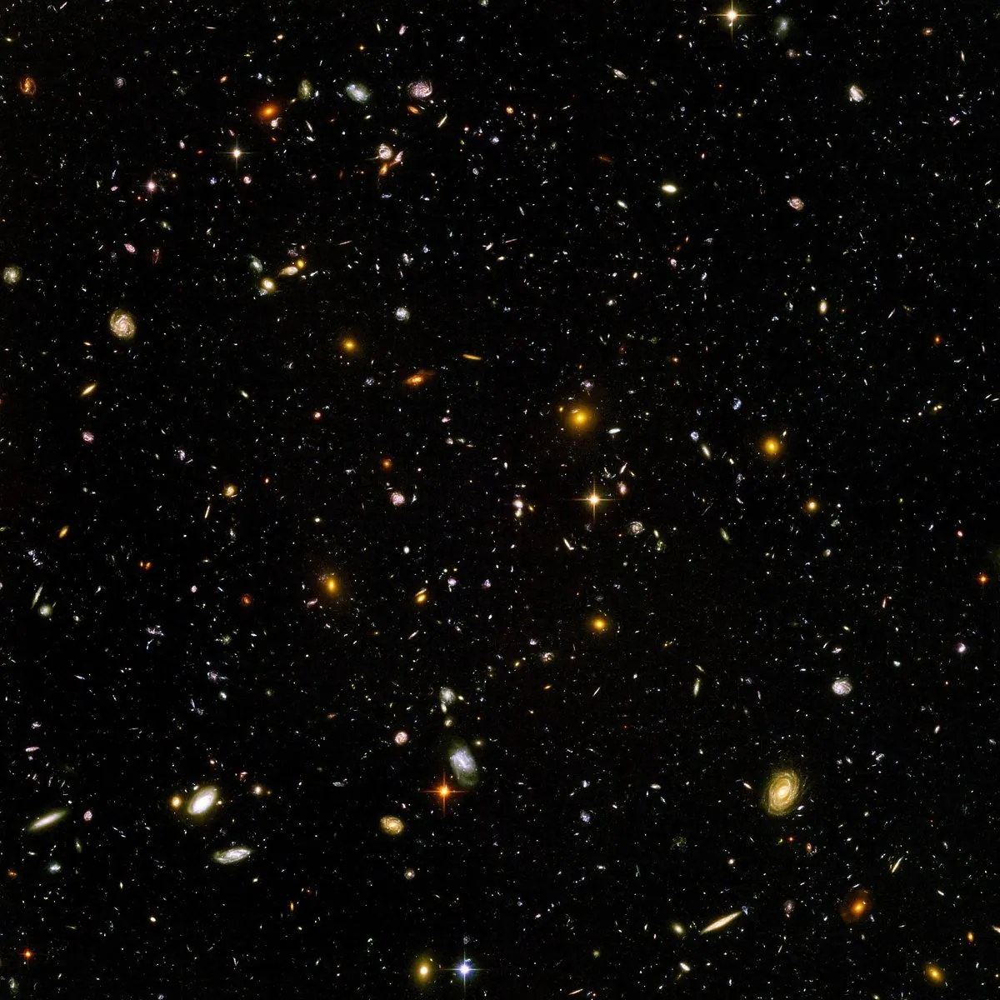
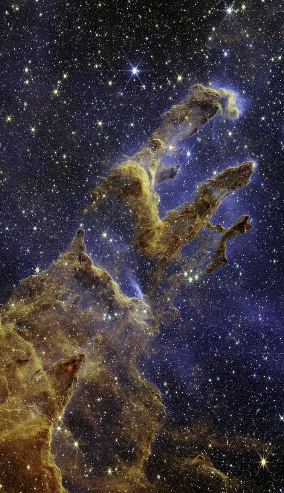
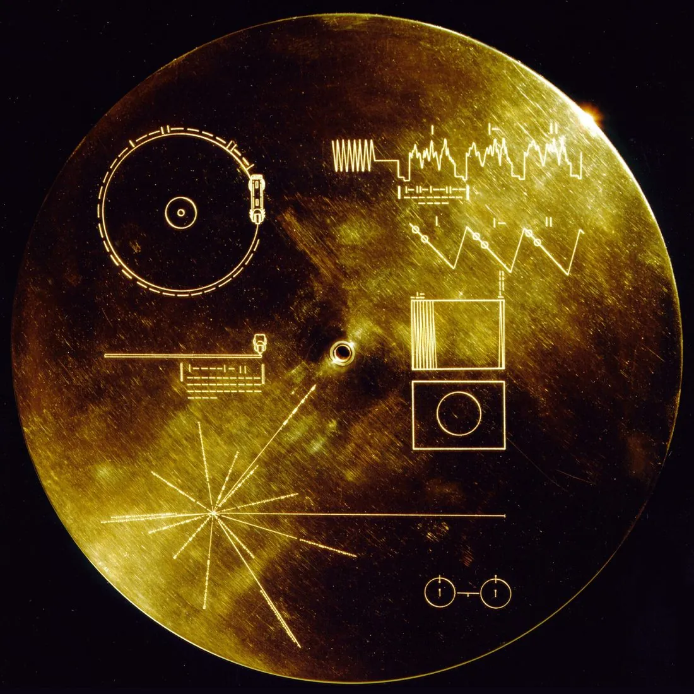
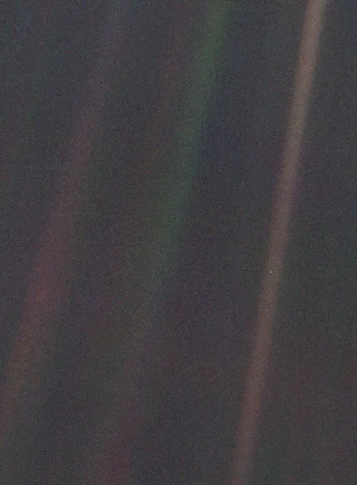

The Fermi Paradox - Why are we alone in space?
One day in the summer of 1950, the physicist Enrico Fermi was walking to lunch at Los Alamos with Edward Teller, Emil Konopinski, and Herbert York. The conversation on the way over touched on a recent flap of flying saucer reports and a New Yorker cartoon blaming the saucers for a spate of missing New York City bins. They sat down, the talk moved on to ordinary things, and then partway through the meal Fermi burst out, apparently from nowhere: "But where is everybody?" And everyone at the table laughed, because everyone at the table knew exactly what he meant. The conversation had never really ended in his head. He had been running the numbers.
The Milky Way is around thirteen billion years old and contains somewhere between one hundred and four hundred billion stars. We now know, thanks to the exoplanet hunters (what a cool title), that planets are not rare at all; most stars have them, and rocky worlds in temperate orbits number in the billions in our galaxy alone. To be clear about these numbers, think of how many grains of sand you can pick up with your hand. Then think how many are on a beach. Then in all the oceans and seas. Then on all of Earth. Already an impossible number to consider, right? Well, scientists approximate that for every grain of sand on Earth, there are more than 10,000 stars in the sky. Our early estimates of the number of planets are double that.
Even at sub-light speeds, a single patient, expansionist civilisation could settle the entire galaxy in a few million years, which is an eyeblink cosmically. Run those figures with even mildly generous assumptions and the sky should be crowded, humming, obviously inhabited many times over. Instead: silence. Nobody visiting, nobody broadcasting radio signals, light, anything, nobody leaving ruins we can spot. The astronomer David Brin gave that silence its proper name in a 1983 paper: the Great Silence. The problem of "should be teeming" but actually "seems empty" is the Fermi paradox. There are answers to the paradox, but they are unsettling.
I've spent a large part of my reading life inside science fiction that explores these answers. So this is a tour of the Great Silence with my own bookshelf as the guide, and I'm going to let the books speak in their own words as we go.
Quick jargon guide
- Fermi paradox: the tension between the apparent high likelihood of alien civilisations and our total lack of evidence for any.
- Drake equation: a famous attempt to estimate the number of contactable civilisations by multiplying a chain of probabilities, most of which we can't yet measure.
- Great Filter: a hypothesised barrier that stops almost all life from reaching a spacefaring stage. It may be behind us, or ahead.
- Dark forest hypothesis: the idea that the universe is silent because any civilisation that reveals itself risks destruction, so everyone hides.
- Von Neumann probes: hypothetical self-replicating spacecraft that could explore a whole galaxy from a single origin, which sharpens the paradox.
- SETI and METI: the search for extraterrestrial intelligence (listening) and messaging extraterrestrial intelligence (deliberately transmitting). One is uncontroversial; the other very much is not.
The case for a crowded sky
In 2003 and 2004, astronomers pointed the Hubble Space Telescope at a patch of sky in the constellation Fornax about as big as a grain of sand held at arm's length. They chose it as there were no bright stars, nothing in the way, a keyhole into the dark. The telescope stared at that keyhole for the better part of a million seconds, and this is what came back:

Roughly ten thousand galaxies, each one a hundred billion stars or so. Multiply that keyhole across the whole sky and you get the modern estimate of a couple of trillion galaxies in the observable universe. Arthur C. Clarke, writing in Rendezvous with Rama back in 1973, had this wonderful line on what numbers like that imply:
If such a thing had happened once, it must surely have happened many times in this galaxy of a hundred billion suns.
— Arthur C. Clarke, Rendezvous with Rama
In 1961 the radio astronomer Frank Drake tried to make the argument rigorous, or at least organised, with the equation that now bears his name: take the rate of star formation, multiply by the fraction of stars with planets, the fraction of planets that could host life, the fraction that do, the fraction where life becomes intelligent, the fraction of those that build detectable technology, and the length of time such civilisations remain detectable. The Drake equation is less a calculation than a way of organising our ignorance, since several of those terms are still complete unknowns, but the point stands: unless one of the terms is savagely close to zero, the galaxy should host many civilisations right now. In full, it looks like this:
| Term | Meaning | Estimate |
|---|---|---|
| R* | new stars formed in the galaxy per year | 1.5–3 (measured) |
| fp | fraction of stars with planets | ≈1 (measured) |
| ne | habitable-zone rocky planets per system | 0.1–0.4 (estimated) |
| fl | fraction of those where life appears | unknown; guesses span 10−8–1 |
| fi | fraction where life becomes intelligent | unknown; guesses span 10−9–1 |
| fc | fraction that build detectable technology | a guess; 0.1–1 |
| L | years a civilisation stays detectable | 102–108 |
You don't need many civilisations for the sky to fill up, though, you really only need one. A single civilisation that builds self-replicating von Neumann probes, machines that land on an asteroid, copy themselves, and send the copies onward, could have surveyed every star system in the galaxy in a few million years. The galaxy has had thousands of times that long. One ambitious species, ever, anywhere, at any point in thirteen billion years, and the evidence should already be very obvious and easy to find. As far as we can tell, it's not there. But why?
Are we just not listening hard enough?
The modern search started in 1960, when Drake pointed a radio telescope at the empty sky and heard nothing. Since then we've had tantalising blips (the famous "Wow!" signal of 1977 arrived, looked exactly like what a beacon might look like, and never repeated) and decades of patchy funding; for most of its history, the search for extraterrestrial intelligence has survived on spare telescope time and philanthropy.
The great exception is Breakthrough Listen, the most serious listening effort our species has ever mounted. It launched in 2015, announced at the Royal Society with Stephen Hawking on stage, and backed with $100 million of the investor Yuri Milner's money over ten years, which bought guaranteed, sustained time on world-class instruments rather than scraps of it. The Green Bank Telescope in West Virginia, the Murriyang dish at Parkes in Australia, and later the 64-antenna MeerKAT array in South Africa have been working through a million nearby stars, sweeping the plane of our galaxy, and sampling a hundred nearby galaxies, listening across billions of radio channels at a time, with the petabytes of data made public so that anyone can go hunting through them. That original ten-year observing window is closing about now, and so far we have found: not one confirmed technosignature.
In 2019, thirty hours of Parkes data aimed at Proxima Centauri, the nearest star to the Sun, turned out to contain a narrowband signal near 982 MHz confined to a single channel, drifting slightly in frequency as a transmitter on a moving world would, present when the dish pointed at the star and gone when it nodded away. It was promising enough to earn a name, BLC1, for Breakthrough Listen Candidate 1. A year of forensic analysis later, the team traced it to radio interference from human-made electronics misbehaving somewhere near the telescope.
Even Listen, though, is a drop in the pool. The search space is monstrous: billions of stars, billions of frequencies, and every moment you aren't pointed at the right star on the right channel is a moment a signal could slip past. The SETI pioneer Jill Tarter's favourite analogy is that concluding the ocean has no fish after examining one glass of seawater would be premature, and by recent estimates our combined searching so far amounts to roughly a hot tub's worth of the ocean. So "silence" really means "silence in the tiny slice we've checked". But maybe we're lucky not to have found them.
Answer one: they don't care
Maybe they're out there, and the distances and timescales are simply too vast for overlap. Civilisations may flicker on and off across the galaxy like fireflies on a summer night, each one blazing for ten thousand years and gone, separated from its nearest neighbour by both hundreds of light-years and hundreds of millennia. Nothing needs to be wrong with the universe for this to hold (look at what we're doing to Earth and our own ecosystem, maybe this is how intelligent life goes?). Or maybe, they're out there, but they just don't care about us. Perhaps we're not of interest: we're not smart enough, or we're considered like algae in space.
This is the ache at the centre of Rendezvous with Rama. A fifty-kilometre cylindrical artefact coasts into the solar system, and humanity scrambles to intercept it, explore it, understand it. Rama is not hostile, not benevolent, not curious. It slingshots around the sun, refuels, and leaves without ever acknowledging that we exist, a stranger passing through the room on the way to somewhere else. Contact as a near-miss with something that was never looking for us at all. Clarke ends the book with:
And on far-off Earth, Dr. Carlisle Perera had as yet told no one how he had wakened from a restless sleep with the message from his subconscious still echoing in his brain: The Ramans do everything in threes.
— Arthur C. Clarke, Rendezvous with Rama
Whatever Rama's builders were doing, humans were not the audience for it, and two more of the things are presumably out there not caring about us either.
Answer two: the Great Filter is behind us
In 1996 the economist Robin Hanson described this: somewhere along the path from dead chemistry to galaxy-spanning civilisation there must be at least one step so improbable that almost nothing makes it through, because if the whole path were easy, the galaxy would be full. He called it the Great Filter, and the only question that matters is whether it's behind us or ahead of us.
The comforting version is that it's behind us. There are several candidate steps that might be almost impossibly hard. The origin of life itself, perhaps: we still cannot make it happen in a lab, and we have exactly one confirmed instance. Or the jump from simple cells to complex ones, which on Earth appears to have happened exactly once in four billion years, when one microbe swallowed another and the pair struck the ancient bargain that became the mitochondria powering every animal, plant, and fungus you have ever seen. Life appeared on Earth almost as soon as the planet cooled, then spent ~two billion years, half the planet's history, as single-celled scum before that one lucky deal. If that step is the filter, then the galaxy may be awash with bacteria and empty of anyone to talk to, and we are the rarest thing in a hundred billion star systems. That's not so bad, right?

It would mean the silence isn't a graveyard or a threat; it's just an empty house that we happen to be the first ones to move in. It would make us precious, and it would make every human failure to look after ourselves and each other a cosmic-scale act of vandalism. There's a well-known corollary, due to the philosopher Nick Bostrom, that follows with uncomfortable force: if we ever find independent microbial life on Mars or Europa, that would be terrible news, because it would mean early steps are easy, which pushes the filter forward, towards us.
Answer three: the Great Filter is ahead of us
Maybe the hard steps are all behind every civilisation that reaches our stage, and the filter is what comes next. Maybe technological species reliably destroy themselves (nuclear war, climate collapse, pandemics, their own runaway inventions) within a few centuries of becoming detectable. Every silent star could be a civilisation that got exactly as far as we have and no further. On this reading, the most dangerous period in the life of any intelligent species is the one we are living through right now: the window between inventing world-ending tools and developing the wisdom to not use them.
There's a line in Liu Cixin's The Three-Body Problem, delivered to humanity from a civilisation that has already survived horrors we can't imagine, that could serve as this filter's motto:
Your lack of fear is based on your ignorance.
— Liu Cixin, The Three-Body Problem
What I find clarifying about the filter-ahead hypothesis is that it converts an astronomy question into an ethics question. If it's true, then the Fermi paradox isn't about them at all. It's a mirror held up to us, and our destiny may be in our hands.
Answer four: the dark forest
Liu's sequel, The Dark Forest, builds an entire cosmology from two bleak axioms: survival is the primary need of any civilisation, and the universe's resources are finite. Add two multipliers, the impossibility of ever verifying another civilisation's intentions across light-years (he calls this the chain of suspicion) and the fact that technology can leap unpredictably, so today's harmless neighbour may be unstoppable in a century, and the game-theoretic conclusion grinds out a clear answer: the only safe response to detecting another civilisation is to destroy it before it can destroy you. The universe is silent because everyone who survived long enough to be asked has already worked this out. Here is the passage where the book finally says it aloud, and it's one of the great chilling paragraphs in modern science fiction:
The universe is a dark forest. Every civilization is an armed hunter stalking through the trees like a ghost, gently pushing aside branches that block the path and trying to tread without sound. Even breathing is done with care. The hunter has to be careful, because everywhere in the forest are stealthy hunters like him. If he finds other life—another hunter, an angel or a demon, a delicate infant or a tottering old man, a fairy or a demigod—there’s only one thing he can do: open fire and eliminate them. In this forest, hell is other people. An eternal threat that any life that exposes its own existence will be swiftly wiped out. This is the picture of cosmic civilization. It’s the explanation for the Fermi Paradox.
— Liu Cixin, The Dark Forest
It's game theory as horror, a prisoner's dilemma with extinction as the payoff matrix, and it's completely logical, which is terrifying.
Hiding probably doesn't work: Earth's atmosphere has been shouting "biosphere here" in oxygen, detectable by any sufficiently good telescope, for two billion years, long before anyone here could decide to whisper. Interstellar attacks are neither cheap nor risk-free, and a civilisation that attacks every signal it hears reveals itself with every shot. Cooperation, verification, and deterrence all have more room to operate than the novel allows. Most researchers treat the dark forest as a vivid corner case rather than a likely equilibrium. But as a possibility, it is terrifying, because the scariest monsters are the ones made entirely of sound reasoning and logical choices.
Answer five: they're everywhere, and we're the ant by the motorway
Maybe the galaxy is roaring with civilisation and we simply aren't the kind of thing that can hear it, the way an ant colony beside a motorway has no concept of the traffic. Advanced intelligences may no more use radio than we use flag waving to talk to satellites; they may have migrated to substrates and scales we can't perceive, turned inward into simulated worlds, or be waiting out the present era of the universe entirely (there's a delightfully strange proposal called the aestivation hypothesis on which they're sleeping until the cosmos cools enough to compute efficiently). The zoo hypothesis, where they know about us and deliberately leave us alone like a protected reserve, lives in this family too.
This is the territory of the Culture novels I love so much. Iain M. Banks's galaxy is the opposite of Liu's: it is teeming, gloriously, with a post-scarcity civilisation run by benevolent AI Minds whose intelligence is to ours roughly what ours is to a beetle's. Banks understood what an encounter between mismatched civilisations means for the smaller one. His novel Excession is named for the problem, and contains this wonderful passage:
An Outside Context Problem was the sort of thing most civilisations encountered just once, and which they tended to encounter rather in the same way a sentence encountered a full stop. The usual example given to illustrate an Outside Context Problem was imagining you were a tribe on a largish, fertile island; you’d tamed the land, invented the wheel or writing or whatever, the neighbours were cooperative or enslaved but at any rate peaceful and you were busy raising temples to yourself with all the excess productive capacity you had, you were in a position of near-absolute power and control which your hallowed ancestors could hardly have dreamed of and the whole situation was just running along nicely like a canoe on wet grass . . . when suddenly this bristling lump of iron appears sailless and trailing steam in the bay and these guys carrying long funny-looking sticks come ashore and announce you’ve just been discovered, you’re all subjects of the Emperor now, he’s keen on presents called tax and these bright-eyed holy men would like a word with your priests.
— Iain M. Banks, Excession
The irony of the Culture books is that their galaxy would look silent to us too. The Minds don't broadcast omnidirectional radio beacons; why would they? Our instruments searching for someone like Banks's galaxy are like a toddler trying to read someone's Ph.D. thesis. Clarke got at the same humility half a century earlier in 2001: A Space Odyssey, where the alien presence is a featureless black slab that reshapes the destiny of a species, and the astronauts approaching its big brother remind themselves of the only sensible etiquette for meeting something beyond you:
It was the mark of a barbarian to destroy something one could not understand.
— Arthur C. Clarke, 2001: A Space Odyssey
Liu's hunters shoot because they cannot understand each other. Clarke's civilisation treats incomprehension as the reason to hold fire. Same premise, opposite ethics.
The gentler bets
The genre isn't all cosmic dread, and neither are the serious answers. Some resolutions to the paradox are almost cheerful: maybe contact is rare and hard but fine when it happens. My favourite dramatisation of the hopeful case is Andy Weir's Project Hail Mary, in which first contact turns out to be two frightened engineers from different biospheres, stranded in the same star system by the same catastrophe, solving problems together with duct tape and good faith. It's the anti-dark-forest: two civilisations meet in deep space, neither knows anything about the other, and instead of opening fire they build a shared vocabulary and fix each other's ships:
Human beings have a remarkable ability to accept the abnormal and make it normal.
— Andy Weir, Project Hail Mary
And the moment the book is remembered for, the first physical gesture ever exchanged between two intelligent species, is not a weapons lock. It's the alien engineer Rocky pressing a claw to the divider between their incompatible atmospheres:
He puts his claw against the divider. “Fist my bump.”
— Andy Weir, Project Hail Mary
Before I bring up the next author, I must state that Orson Scott Card is a notorious homophobe: he can somehow imagine interplanetary peace between species, but not sex between two people of the same sex.
Card's Speaker for the Dead sits in between the dark and the light. Its catastrophe requires no malice from anyone. Humans and the alien "piggies" harm each other horrifically while both sides believe they are being kind; the tragedy is manufactured entirely out of mistranslation. The book even proposes a taxonomy of strangeness (from the foreigner next door up through the true alien with whom no shared understanding is possible) and then spends its whole length arguing that the boundary between "stranger we can know" and "monster we can't" is not a fact about them:
When you really know somebody you can’t hate them. Or maybe it’s just that you can’t really know them until you stop hating them.
— Orson Scott Card, Speaker for the Dead
Again, how exactly can the guy who wrote that be homophobic? Anyway, as answers to Fermi go, Card's is subtle: perhaps contact has failure modes far short of annihilation, and the silence is partly made of species that met, misunderstood each other, and withdrew.
The message we already sent
We have already taken a side in the debate, physically. In 1977, NASA launched the two Voyager probes, and bolted to the side of each is a gold-plated copper record carrying greetings in dozens of languages, the sounds of surf and birdsong and a human heartbeat, ninety minutes of music, and over a hundred encoded images of life on Earth. The cover art doubles as an instruction manual, with a pulsar map showing any finder exactly which star the makers orbit. Voyager 1 crossed into interstellar space in 2012 and is now more than twenty-five billion kilometres away, the most distant human-made object there is, and the records are expected to remain playable for a billion years. We wrote our home address on a postcard and mailed it out there for anyone to find.

I wrote about why the Voyagers move me so much in What We Leave Behind, and everything above complicates that affection. Whether we should keep deliberately announcing ourselves (METI, as opposed to merely listening) is a live argument among serious people. The Arecibo message of 1974 was beamed at a star cluster twenty-five thousand light-years away partly as a stunt; Stephen Hawking spent his last years warning against anything louder; the counterargument runs that our radio and radar have been leaking for a century and our oxygen for two billion years, so discretion is a door we're closing on an empty stable. There is currently no international body with any authority over who may shout into the sky on the species' behalf, which is its own kind of remarkable. We might doom ourselves with our individuality and nationalism.
The empty sky is a mirror
Step back from the individual answers and a pattern appears: every solution to the Fermi paradox is really a claim about the deepest tendencies of minds. The dark forest says intelligence is inevitably paranoid and pre-emptive. The filter-ahead says technological species are inherently self-destructive. Banks's teeming galaxy says maturity means outgrowing the urge to conquer, and Clarke's says it means learning reverence for what you can't parse. Weir bets that engineers are engineers everywhere (and that curiosity and a will to survive can bond us with anyone). Card warns that the real filter is empathy. None of these are astronomy. They're anthropology projected onto the stars. There's a great line in The Three-Body Problem that summarises our power over any of this:
Every era puts invisible shackles on those who have lived through it, and I can only dance in my chains.
— Liu Cixin, The Three-Body Problem
It's surely no accident that the dark forest crystallised in the imagination of an author shaped by the Cultural Revolution, that the Culture flowed from a Scottish socialist writing through the end of the Cold War, or that the great American first-contact story of the 2020s is about strangers cooperating on a technical problem. Our Fermi answers age as we do. Which makes me wonder which shackles I'm dancing in when I pick my own favourite.

The version of the future I want to be true is Banks's, not Liu's: a galaxy where growing up means growing kinder, where the silence is the discretion of the vast rather than the held breath of the frightened. I can't prove it, and nobody can, yet. What I can say is that the paradox stops being paralysing the moment you notice it's a mirror. I just hope we can live up to our own imagined best selves. Clarke, as usual, said it best, describing the first creatures on the African plain who began to be something more:
Unlike the animals, who knew only the present, Man had acquired a past; and he was beginning to grope toward a future.
— Arthur C. Clarke, 2001: A Space Odyssey
Common questions
Doesn't the sheer size of the universe make alien life basically certain?
Life, maybe; contactable civilisations, not necessarily.
Have we really searched enough to call it a "Great Silence"?
No. Radio SETI has existed since 1960, but the combined search so far covers a sliver of stars, frequencies, and observing time; one 2018 analysis compared it to sampling a hot tub's worth of water from all of Earth's oceans.
Is the dark forest hypothesis taken seriously by scientists, or is it just great fiction?
Both, with emphasis on the fiction. It's a vivid, internally-consistent possibility that draws on real ideas (game theory under uncertainty, the danger of unknown intentions), and it's discussed, but it rests on contestable assumptions: that expansion is always desirable, that pre-emptive destruction is feasible and cheap across interstellar distances, that hiding actually works against a sufficiently advanced observer (Earth's oxygen atmosphere has been detectable for around two billion years). Serious thinkers poke real holes in it.
Should we be sending messages to potential aliens (METI) at all?
It's a genuine and unresolved debate. One camp argues that deliberately broadcasting our location to an unknown universe is reckless if anything like the dark forest is true (you don't shout in a forest you can't see into). The other argues that we already leak detectable signals, that fear of contact is unfalsifiable paranoia, and that the potential upside of connection is immense. There's currently no international governance for it, which itself worries people. It's a rare case where a science-fiction premise (should we announce ourselves?) is also a live policy question with no agreed answer.